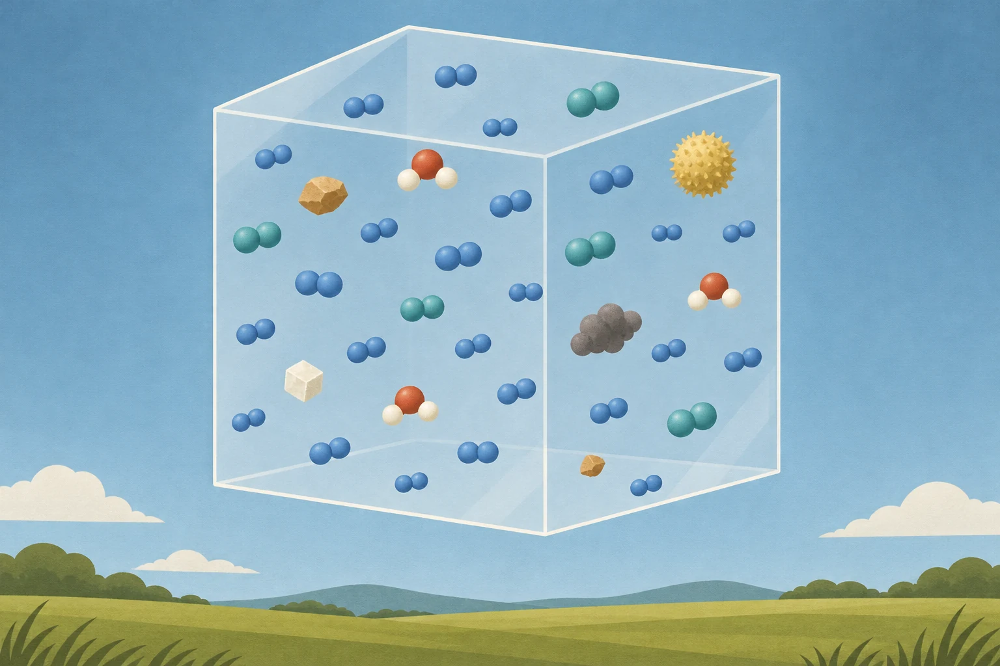
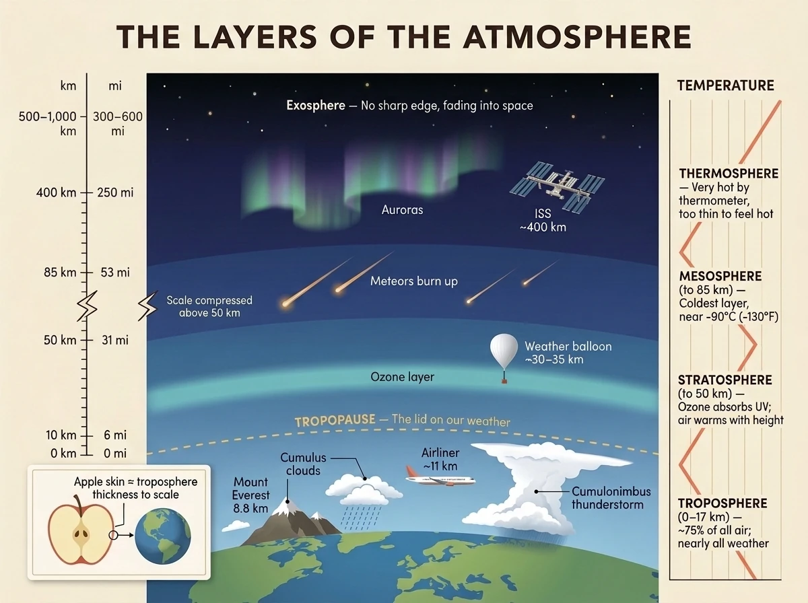
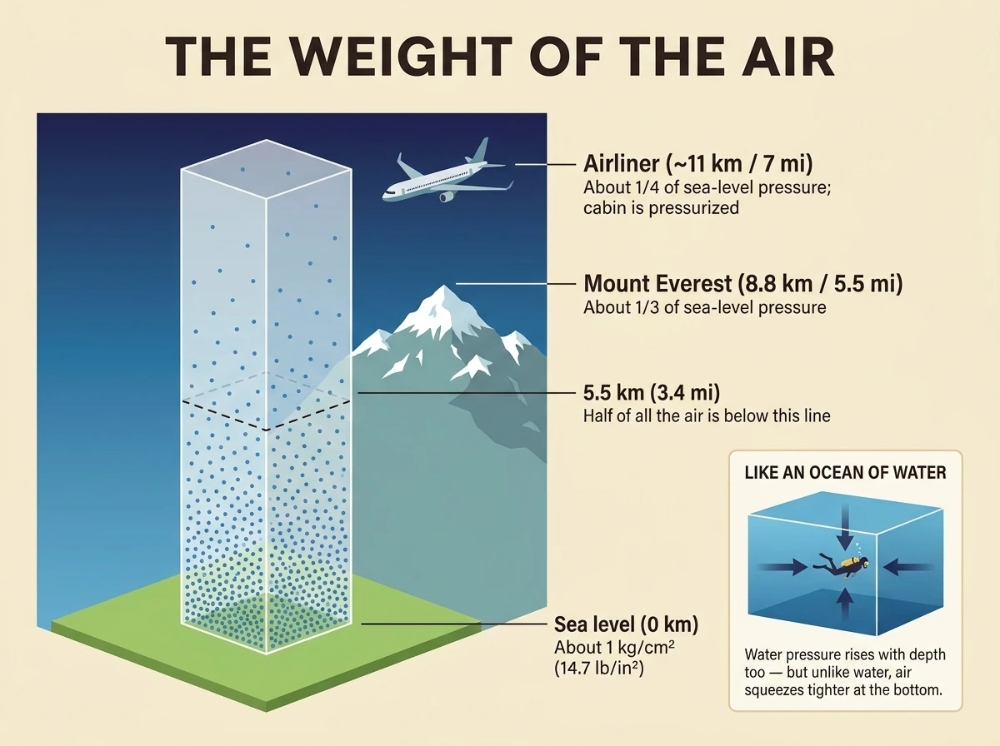
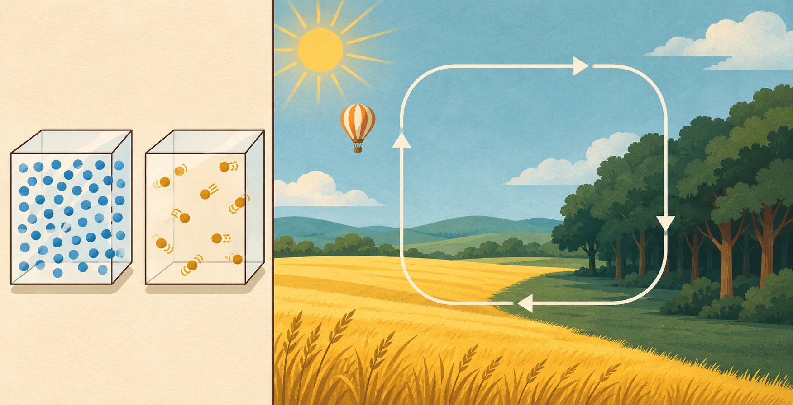
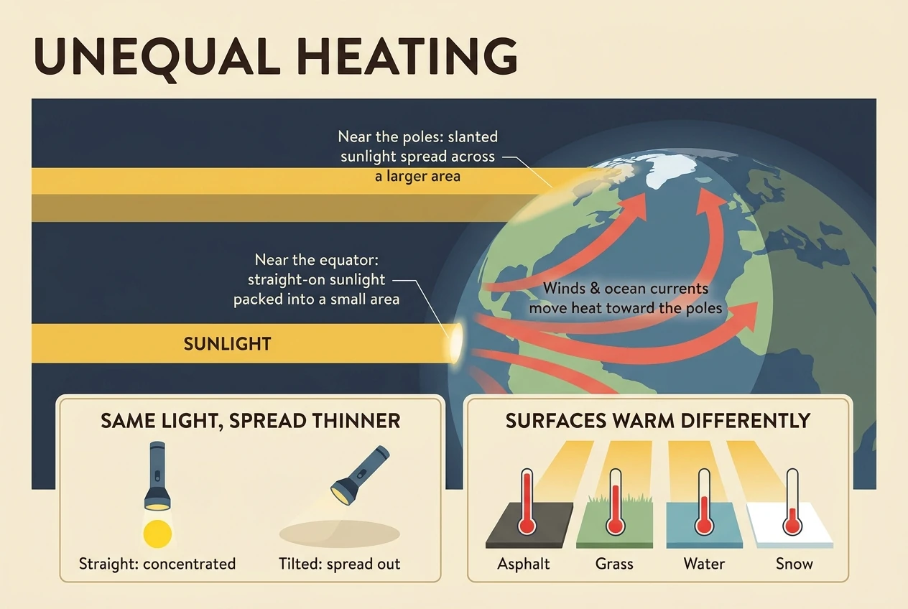
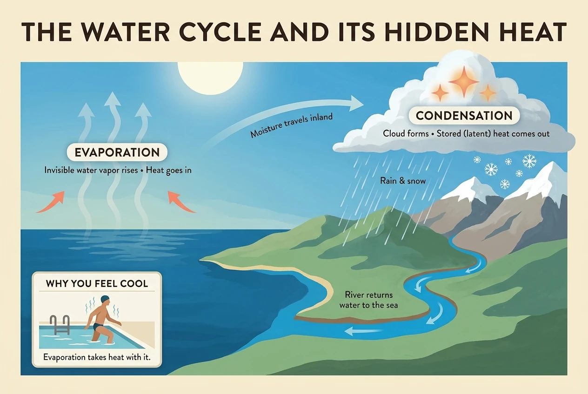
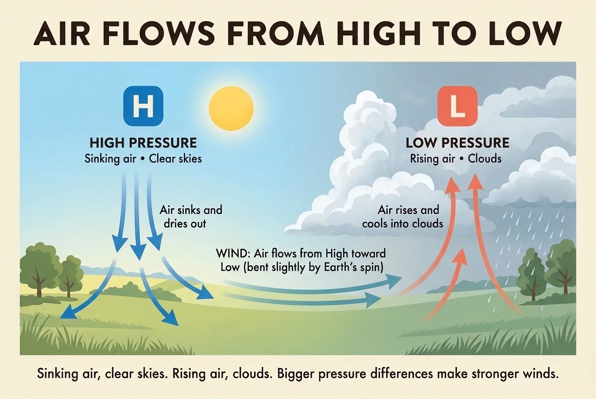
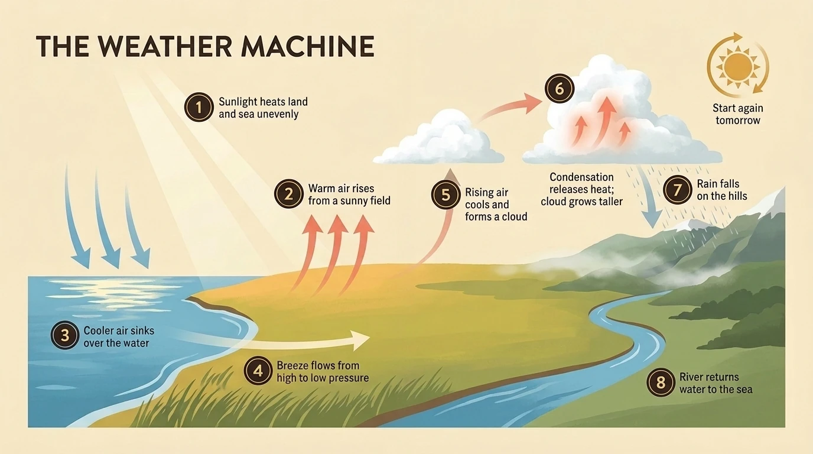

Chapter 1
The Ocean of Air
Weather begins in something invisible.
We live at the bottom of an ocean of air, buried beneath a column of atmosphere that reaches hundreds of kilometers above us. We do not see this ocean, and most of the time we do not notice its weight. Yet it presses against every surface, slips through every open window, carries water across continents, and turns sunlight into wind, clouds, rain, snow, and storms.
Air looks empty because its molecules are too small to see. But air is matter. It has mass. It occupies space. It can be heated, cooled, compressed, expanded, lifted, and set in motion.
A quiet blue sky may look like nothing is happening. In fact, the atmosphere is always adjusting. One patch of ground warms faster than another. Air expands here and contracts there. Pressure rises in one region and falls in another. Water evaporates from an ocean, travels invisibly for hundreds of miles, then returns as rain.
Weather is the atmosphere trying to even things out.
The Sun supplies the energy. Earth distributes it unevenly. Air and water carry it from place to place.
That is the basic weather machine.
Everything that follows—sea breezes, cold fronts, towering clouds, jet streams, blizzards, thunderstorms, and hurricanes—grows from that restless exchange of heat, moisture, and motion.
1.1 What Is the Atmosphere?
The atmosphere is the mixture of gases surrounding Earth and held close by gravity.
It is not a shell with a hard outer edge. It thins gradually with height, fading molecule by molecule into space. Near the ground, the air is dense enough to breathe and heavy enough to produce substantial pressure. Far above Earth, its molecules are scattered across enormous distances.
Dry air near sea level consists mainly of:
| Gas | Approximate share |
|---|---|
| Nitrogen | 78% |
| Oxygen | 21% |
| Argon | 0.93% |
| Carbon dioxide | About 0.04% |
| Other gases | Trace amounts |
These proportions make air sound orderly. Weather is not.
Mixed among the permanent gases is a constantly changing amount of water vapor. There are also microscopic particles of sea salt, dust, smoke, pollen, volcanic ash, and pollution.
These minor ingredients have an influence far larger than their numbers suggest.
Water vapor forms clouds and precipitation. It absorbs and releases energy as it changes between vapor, liquid, and ice. Tiny airborne particles give water vapor surfaces on which to condense or freeze. Without them, familiar clouds would be much harder to form.
The atmosphere is therefore not simply a bag of gases. It is a moving mixture of gases, water, particles, and energy.
Illustration 1: An apparently empty cube of air

1.2 The Atmosphere Has Layers
The ocean of air is deep, but weather happens near the bottom.
Scientists divide the atmosphere into layers, mostly by how temperature changes with height. The lowest layer is the troposphere. It reaches about 8 kilometers (5 miles) above the poles and about 17 kilometers (11 miles) above the tropics. Shrink Earth to the size of an apple, and the troposphere would be thinner than the skin.
That thin layer holds about three-quarters of all the air and nearly all of its water vapor. So it holds nearly all of our weather.
The troposphere is heated from below. Sunlight passes through the air and warms the ground and the sea, and they warm the air above them. That is why the air usually grows colder as you climb.
At the top of the troposphere, the cooling stops. Above this boundary, the tropopause, lies the stratosphere, where ozone absorbs ultraviolet sunlight and the air grows warmer with height. Warm air resting on cooler air resists mixing, so the stratosphere works like a lid. When a thunderstorm grows tall enough to reach it, the storm's top spreads sideways into a flat anvil.
Higher still, meteors burn up, auroras glow, and the last thin air fades into space. Those layers are remarkable, but our weather is made down here, at the bottom of the ocean.
Visual Spread 1.2: The Layers of the Atmosphere

1.3 Air Has Weight
Every ocean has weight, and the ocean of air is no exception.
Gravity pulls the air toward Earth. All the air stacked above you presses down on everything below it. That push is air pressure.
At sea level, it adds up to about 1 kilogram on every square centimeter, or about 14.7 pounds on every square inch. A column of air the width of your thumbnail, reaching from the ground to the top of the atmosphere, weighs about as much as a full bottle of water.
You do not feel crushed because the air presses on you from every direction at once, and the air and fluids inside your body press back with the same force. You only notice when the balance changes quickly, such as when your ears pop in an elevator or an airplane.
Air pressure falls as you climb, because there is less air above you. A diver feels the same thing in reverse: the deeper they go, the more water presses on them.
But air is different from water in one important way. Air can be squeezed. The air near the ground is packed tight by the weight of everything above it, while the air higher up is spread thin. So the atmosphere is not evenly stacked. About half of all the air lies below 5.5 kilometers (3.4 miles), lower than the tallest mountains.
These differences in pressure, from place to place and from day to day, are what set the air in motion. They are where wind begins.
Illustration 3: The weight of the air

1.4 Warm Air Rises
Temperature is a measure of motion.
Every molecule of air is moving, bouncing off its neighbors billions of times a second. In warm air, the molecules move faster. In cold air, they move more slowly.
Fast-moving molecules push one another apart, so warm air spreads out. A box of warm air holds fewer molecules than the same box of cold air, which makes it lighter. Scientists say it is less dense.
Lighter air floats on heavier air, the way a cork floats in water. The heavier, cooler air around it settles underneath and pushes it upward. That is why a hot-air balloon rises, and why a column of warm air can climb from a sunny parking lot.
Rising air does not climb forever. As it rises, it expands and cools, and sooner or later it may stop. Whether it stops early or keeps climbing can make the difference between a calm afternoon and a thunderstorm. Chapter 2 explains why.
Meanwhile, cooler air sinks to take the rising air's place. Warm air up, cool air down, and back around again. This loop is called convection, and it is one of the main ways the atmosphere evens things out.
Illustration 4: Why warm air rises

1.5 The Sun Heats Earth Unevenly
The Sun supplies nearly all the energy for weather. But it does not deliver that energy evenly.
Sun angle matters most. Near the equator, sunlight strikes the ground almost straight on, packing its energy into a small area. Near the poles, the same sunlight arrives at a low slant and spreads across a much larger area, so each patch of ground gets less. Shine a flashlight straight down on a table, then tilt it, and you can see the effect. Long summer days and short winter days add to the difference.
The surface matters. Dark pavement soaks up sunlight. Fresh snow reflects most of it. Water warms slowly and holds its heat. Dry land warms quickly and cools quickly. Forests and fields cool themselves by releasing water.
Clouds matter. By day they block sunlight and keep the ground cooler. By night they act like a blanket and keep it warmer.
The result is a planet of warm and cool patches. On the largest scale, the tropics take in more energy than they lose, and the poles lose more than they take in. If nothing moved, the tropics would keep getting hotter and the poles colder. Instead, winds and ocean currents carry heat from the warm regions toward the cold ones, all the time.
That steady flow is the atmosphere evening things out on the scale of a whole planet.
Illustration 5: Unequal heating

1.6 Water: The Hidden Fuel
Water is the atmosphere's most important minor ingredient.
It appears in the air in all three forms. As a gas, it is invisible water vapor. As a liquid, it makes cloud droplets, fog, and rain. As a solid, it makes ice crystals, snow, and hail. Every cloud you see is liquid or ice. The vapor is the part you cannot see.
Water vapor enters the air by evaporation, mostly from the oceans, and also from lakes, soil, and plants. Warm air can contain much more vapor than cold air before it becomes saturated, or full. When moist air cools enough, some of its vapor condenses onto tiny particles of dust or salt, and a cloud is born. Chapter 3 tells that story in full.
Water also carries energy in a hidden form.
Evaporating water takes heat from its surroundings. That is why you feel cool when you step out of a swimming pool. The heat is not lost. It travels inside the vapor, sometimes for thousands of kilometers. When the vapor condenses into a cloud, that stored heat, called latent heat, is released into the surrounding air.
This is where storms get much of their power. Inside a growing thunderstorm, condensing vapor releases heat, which warms the rising air, which helps it rise faster, which condenses more vapor. A hurricane runs on the same exchange, drawing heat from a warm ocean and releasing it in its towering clouds.
Water is not simply carried by the weather. It helps power it.
Illustration 6: The water cycle and its hidden heat

1.7 Air Flows From High to Low
Air pressure is not the same everywhere.
Where air is sinking or piling up, pressure is higher. Where air is rising or spreading out, pressure is lower. Uneven heating keeps making these differences, and the air keeps trying to erase them.
Air moves from high pressure toward low pressure, the way water in a tilted bathtub sloshes back toward level. That moving air is wind.
Wind is the atmosphere evening things out.
The bigger the difference in pressure, and the shorter the distance between high and low, the stronger the wind. A gentle difference over a long distance makes a breeze. A sharp difference over a short distance can make a gale.
The air never quite reaches level, because the Sun keeps making new differences. It never flows in a straight line either, because Earth spins beneath it. Chapter 5 explains how that bends the wind.
Highs and lows also shape the sky. In a high, the air is slowly sinking, which tends to dry it out and bring clear skies. In a low, the air is rising, which tends to cool it and build clouds. That is why falling pressure often comes before bad weather, and rising pressure before it clears.
Illustration 7: From high to low

1.8 The Weather Machine
We can now put the pieces together.
The Sun warms Earth unevenly. Some air becomes warmer and lighter than the air around it. Warm air rises and cool air sinks, creating differences in pressure. Air flows from high pressure toward low, and we feel it as wind. Rising air expands and cools, its water vapor condenses, and clouds form. The condensing vapor releases heat, which drives the air upward even harder. Rain or snow falls, and the water returns to the ground to start again.
Real weather is far more complicated. Earth spins, mountains lift and block the air, and patterns as small as a dust devil and as large as a continent interact all at once.
But underneath all of it, this simple machine is always running. Every chapter that follows is about one part of it, or about what happens when several parts work together.
Weather is the atmosphere trying to even things out. It never quite succeeds, because every morning the Sun rises and starts the work again.
Visual Spread 1.8: The Weather Machine

Field Observation
Watch the Ground Heat the Air
On a sunny day, find two different surfaces close together: grass and pavement, sun and shade, or a garden and a rooftop.
Hold your hand just above each one without touching it. Feel which one has warmed the air more. Look for shimmering air above hot pavement, bits of fluff or insects carried upward, and, later in the day, puffy clouds beginning to form.
For a closer look, place two thermometers at the same height above two different surfaces, both shaded the same way. Read them every ten minutes for an hour.
You are watching the first step of the weather machine: the Sun heating Earth unevenly.
Try It
Make a Convection Chamber
You will need: a clear glass baking dish, two small cups, warm water, ice water, and food coloring.
Set the dish on top of the two cups: one filled with warm water, one with ice water. Fill the dish with room-temperature water and let it settle. Add a few drops of food coloring at each end, just above the cups.
Watch the color rise over the warm cup and sink over the cold one. Slowly, a loop forms across the dish.
The chamber uses water instead of air, but the motion is the same: warm fluid rises, cool fluid sinks, and the whole tank starts to turn.
Use warm water, not boiling water. A weather lesson should not become an emergency-room story.
Chapter Summary
We live at the bottom of an ocean of air. Air has weight, takes up space, and can be heated, cooled, squeezed, and set in motion.
Nearly all weather happens in the troposphere, the thin lowest layer that holds most of the air and nearly all of its water.
The weight of the air creates air pressure, which falls quickly with height.
The Sun heats Earth unevenly. Warm air is lighter and rises, cool air sinks, and air flows from high pressure to low as wind.
Water vapor forms clouds when air cools, and releases hidden heat that powers storms.
Together, these make the weather machine. Weather is the atmosphere trying to even things out.
Weather-Watcher's Vocabulary
Atmosphere: The mixture of gases, water, and particles surrounding Earth. Troposphere: The lowest layer of the atmosphere, where nearly all weather happens. Tropopause: The boundary at the top of the troposphere. It acts like a lid on the weather. Stratosphere: The layer above the troposphere, where ozone warms the air. Air pressure: The push of the air above, caused by its weight. Density: How much matter is packed into a given space. Convection: A loop of rising warm air and sinking cool air. Water vapor: Water as an invisible gas. Saturated: Holding as much water vapor as possible at its temperature. Latent heat: Heat stored in water vapor and released when it condenses. Wind: Air moving from higher pressure toward lower pressure.
Next: Chapter 2, Temperature, Heat, and the Restless Atmosphere